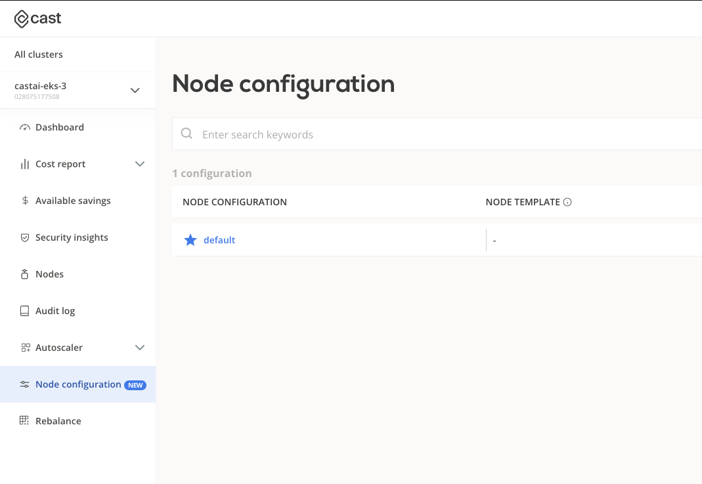
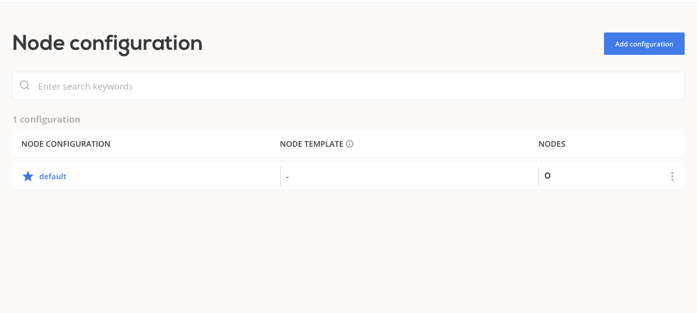
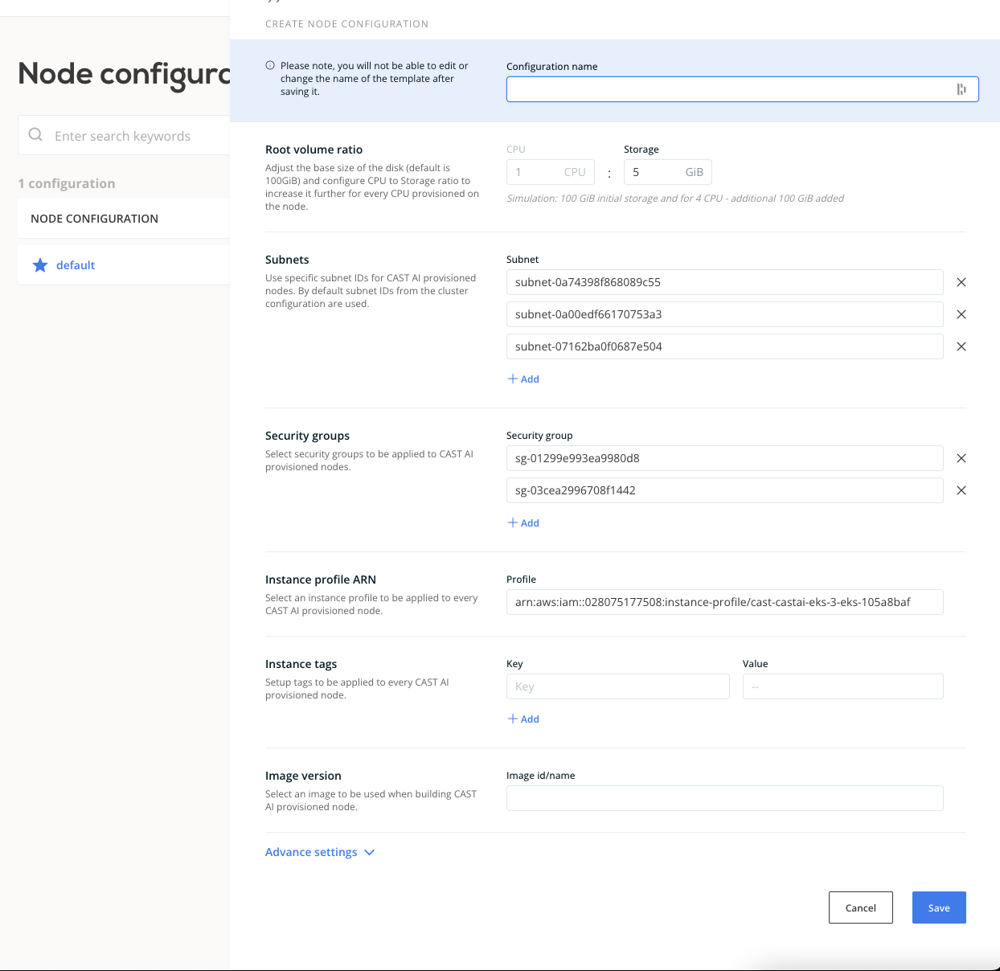
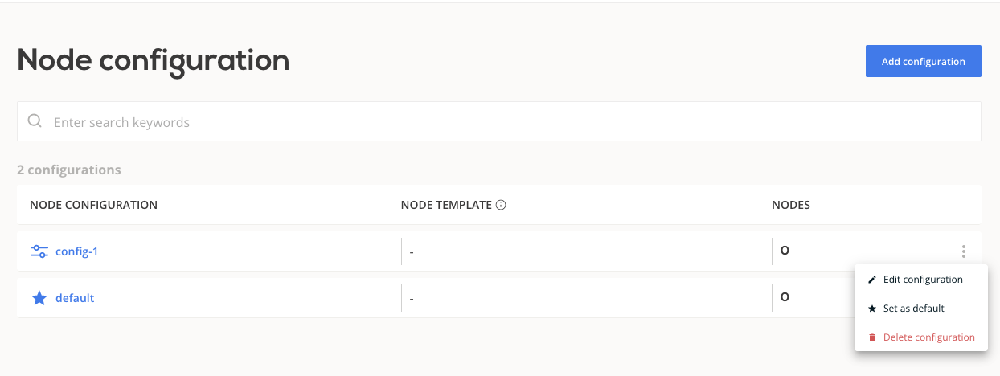
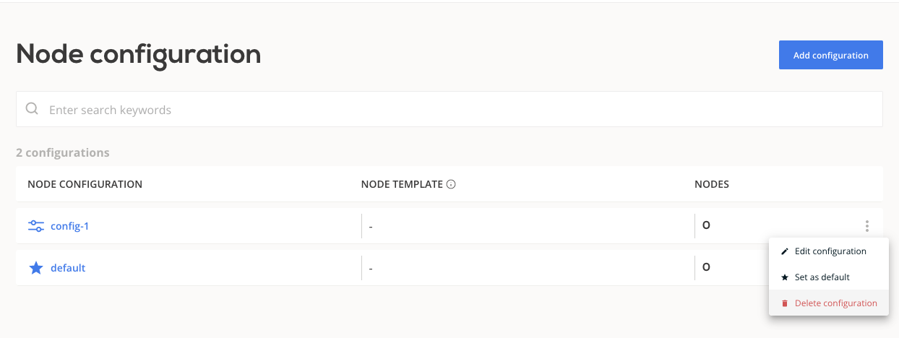
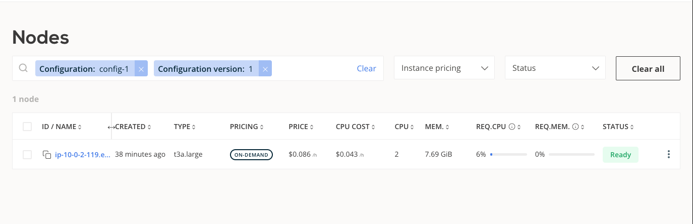

Node Configuration¶
Feature availability¶
| EKS | KOPS | GKE | AKS |
|---|---|---|---|
| + | - | - | - |
The CAST AI provisioner allows you to provide node configuration parameters that will be applied to CAST AI provisioned nodes. Node configuration on its own does not influence workload placement.
The list of supported configuration parameters:
| Configuration parameters | Description |
|---|---|
| Root volume ratio | CPU to storage (GiB) ratio |
| Subnets | Subnet IDs for CAST AI provisioned nodes |
| Instance tags | Tags for CAST AI provisioned nodes |
| Image version | Image ID or name to be used when building CAST AI provisioned node |
| SSH key | Base64 encoded public key or AWS key ID |
| Security groups (EKS) | Security group IDs for CAST AI provisioned nodes |
| Instance profile ARN (EKS) | Instance profile ARN for CAST AI provisioned nodes |
| Dns-cluster-ip (EKS) | Override the IP address to be used for DNS queries within the cluster |
By default values are either inferred from the cluster (subnets, security groups...) or a generic value is applied.
Some configuration options are cloud provider specific, see table below:
Shared configuration options¶
| Configuration | Default value |
|---|---|
| Root volume ratio | 1 CPU : 5 GiB |
| Image version | Latest available for kubernetes release* |
| SSH key | "" |
| Subnets | All subnets pointing to NAT/Internet Gateways inside cluster VPC |
| Instance tags | [] |
* List of available images for EKS in aws docs
EKS configuration options¶
| Configuration | Default value |
|---|---|
| Security groups | Tagged and CAST AI SG |
| Instance profile ARN | cast-<cluster-name>-eks-<cluster-id> (only last 8 digits of cluster ID) |
| Dns-cluster-ip | "" |
Create node configuration¶
A default node configuration is created during phase 2 cluster onboarding. You can choose to modify this configuration or create a new one. If you choose to add new node configuration that will be applied to all newly provisioned nodes, you will have to mark it as the default node configuration.
Node configurations are versioned and when the CAST AI provisioner adds new node, the latest version of node configuration is applied. Over time CAST AI provisioned nodes trend to the latest available node configuration.
Create node configuration in CAST AI Console¶
In the cluster view a new tab "Node configuration" has been created. Here you can view and manage node configurations.

-
Use the button "Add configuration"

-
Name your configuration and fill in your values

-
Click "Save"
-
Click "..." and "Set as default"

Create node configuration with CAST AI Terraform provider¶
Use the resource castai_node_configuration from CAST AI terraform provider.
Reference example:
resource "castai_node_configuration" "test" {
name = local.name
cluster_id = castai_eks_cluster.test.id
disk_cpu_ratio = 35
subnets = aws_subnet.test[*].id
tags = {
env = "development"
}
eks {
instance_profile_arn = aws_iam_instance_profile.test.arn
dns_cluster_ip = "10.100.0.10"
security_groups = [aws_security_group.test.id]
}
}
Create node configuration with CAST AI API¶
For API operations consult the generated documentation.
Delete node configuration¶
To delete a node configuration, the following has to be true:
- the configuration is not linked to a node template
- if the configuration is marked as "default", it must not be the latest version
Delete node configuration in CAST AI Console¶
In the node configuration view, click "..." of the configuration you wish to delete and then "Delete configuration".

Node view¶
In the "Nodes" tab, you can view and filter nodes based on applied node configuration:
